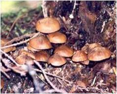

Factores formadores del suelo
El suelo es producto de la acción de diferentes factores sobre la roca o material parental. Se reconocen cinco factores que modulan la formación del suelo. Ellos son:
El clima
El clima, principalmente a través de la temperatura y la precipitación, acelera la meteorización del material parental. En general, altas temperaturas y precipitaciones favorecen la meteorización, la descomposición de la materia orgánica y el lavado de compuestos solubles del perfil del suelo
El relieve
La forma e inclinación del terreno influencian la erosión del suelo, y en consecuencia su formación. A mayores pendientes, mayor es la susceptibilidad de la erosión, y en consecuencia la pérdida del suelo.

Los organismos
Las plantas, animales y microorganismos pueden favorecer la meteorización química y física del suelo, además del movimiento y transformación de materiales dentro de él. Adicionalmente, los organismos aportan materia orgánica, fijan nitrógeno atmosférico y favorecen a la aireación y agregación del suelo, entre otros procesos de formación..
El material parental
El suelo es producto de la meteorización de rocas o sedimentos, que a su vez pueden estar constituidos por diversos minerales que presentan diferencias en la resistencia a las transformaciones que pueden sufrir, producto de la acción de los otros factores ambientales (meteorización).
El tiempo
La acción del clima, los organismos, el relieve y el material parental sobre la formación del suelo requiere tiempo. Si el tiempo para que el resto de los factores operen es corto, los cambios sobre la formación y las características del suelo pueden ser leves; de lo contrario, si los tiempos de acción de los factores formadores del suelo son largos, los cambios pueden ser notorios.

- «
- »